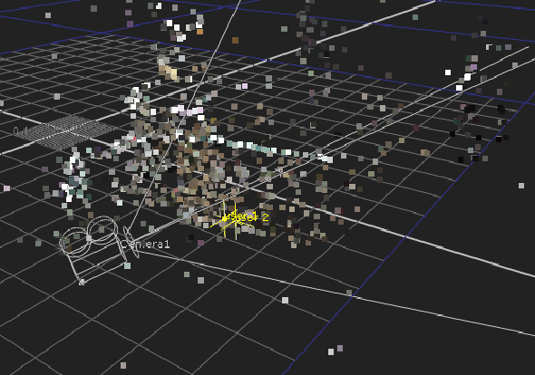
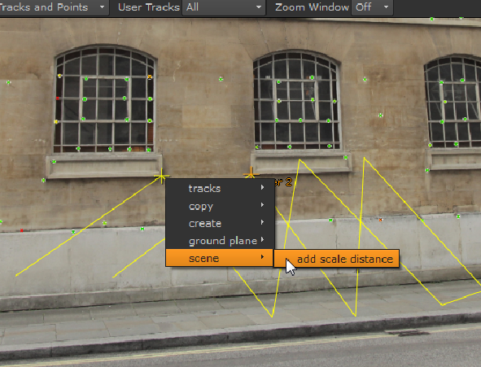

场景约束使您能够使用已知距离 (在设定值时测量) 来更准确地缩放场景。它们适用于自动轨道和用户轨道。
使用的单位由你决定，因为 Nuke 将任何值等同于 3D 空间中的一个单位。图像显示了一个点云和相机，两个用户轨迹被标记出来。蓝色正方形代表一个度量单位，所以较小的正方形代表该单位的 10分之1。所以，如果你用米来测量，一个小正方形可以等于 1米，厘米或毫米。

要创建场景约束:
| 1。 | 在查看器中选择两个已解决的点。 |
| 2. | 右键单击突出显示的点并选择 场景 > 添加比例距离 . |
图像显示用户轨迹，但相同的工作流程适用于自动轨迹。例如，位于窗口窗格上的自动轨迹可以很容易地测量。

连接线，标签 Dist。1 ,在观众中绘制。
| 3. | 在 “属性” 面板中，单击 场景 选项卡显示 比例限制 桌子。 |
| 4. | 单击的距离字段 Dist。1 并输入测量的距离。 |
测得的距离正在考虑当您调整 场景变换 控制。
|
|